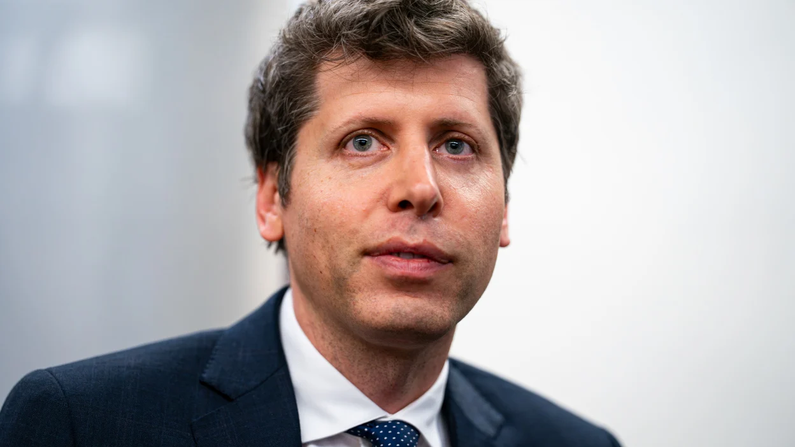
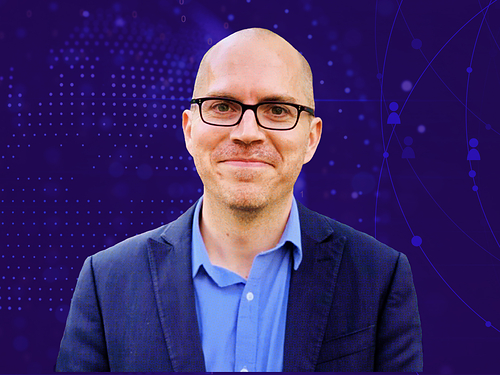
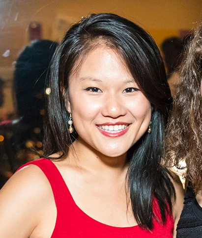
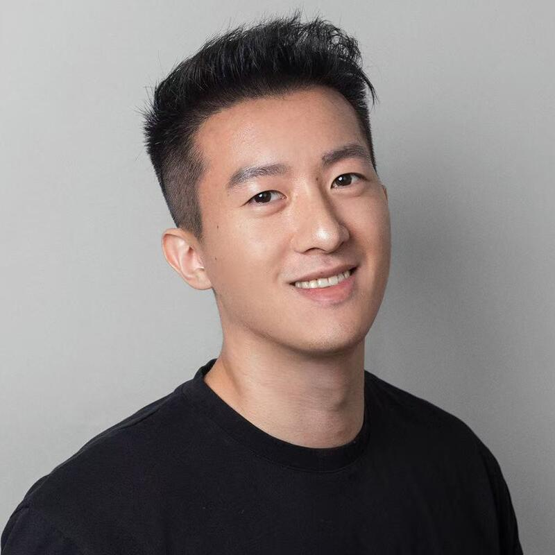

What Was A.I Doc About?
The movie The A.I Doc is a documentary about people's opposing views on A.I and how it could affect us in the future. Some think were creating our demise and we won’t be able to control A.I in the end. While on the other hand others think A.I can be used to help us beneficially like extending our lifespan, and making us more resistant to diseases. And lastly the apocaloptimist are people who view both sides thinking it could end the word but on the flip side apocaloptimists also think A.I can help us. Overall apocaloptimist are really just viewing and taking both sides seriously as if both are possible.

Sam Altman
He is the current CEO of OpenAI. He went to Stanford but dropped out in 2005 to create Loopt, his social mapping company. He sold the company in 2012. He worked at YC from 2014 - 2019. He left his position there to become the CEO of OpenAI. Under his leadership, OpenAI is now worth more than $500 million.

Jason Matheny
He is the president and chief executive officer of RAND. Before he became president of RAND, he worked for the White House on technology and national security. He also worked for Oxford University, IARPA, and other jobs in the tech industry. He graduated from John Hopkins University with a Ph.D. in applied economics, and an M. P. H. from John Hopkins as well.
Emily Bender
Wrote the book “The A.I Con: How to Fight Big Tech’s Hype and Create the Future We Want”. She is the Professor of Linguistics and an Adjunct Professor at the University of Washington, since 2003. She attended the University of California, Berkeley. She also attended Stanford University and got her Master of Arts, and also Doctor of Philosophy in linguistics.

Karen Hao
She is an award-winning Journalist who talks about the impacts of A.I on society. She is also a bestselling author she wrote the book Empire of A.I it was about the company and its global implications. She has a bachelor's degree in mechanical engineering and she minored in energy studies at MIT. She was also formerly a reporter for the wall street journal. Her work is taught in universities and cited by governments.

Rocky Yu
Rocky Yu is the founder of AGI house. He graduated from stanford university when he was 20 and he grew up in a rural area of china, when he graduated college he spent 2 and a half years travelling the world with no money. Most of the time he had no Idea where he would sleep or what he would eat but things often worked out in which he later founded AGI house and piki inc.
| Sam Altman | Jason Matheny | Emily Bender | Karen Hao | Rocky Yu |
|---|---|---|---|---|
| Optimistic | Apocaloptimist | Pessimistic | Pessimistic | Optimistic |
| Happy on the future of A.I. and thinks it will do amazing things. | Takes both sides into consideration and wants A.I. to be limited to the public. | Believes that A.I. is a tool used by billionaires for profits and greed. | Believes that A.I. is more harmful than helpful. | Believes AI has potential but needs to improve before it can be truly helpful. |